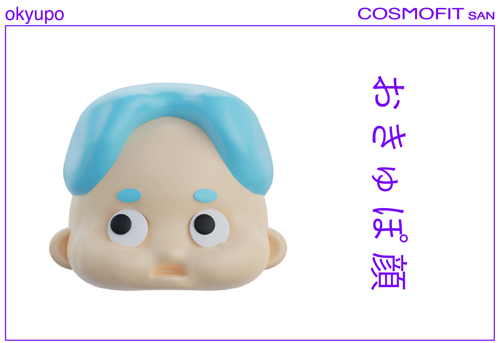

キョムの表情の世界のコスモフィットさん
キョムの顔を愛でよう。
コスモフィットさん5種類（おきゅぽ顔、ぽきゅん顔、おびむ顔、ぽびー顔、しーくれっと顔）は、それぞれコスモフィット星団の（おきゅぽ星、ぽきゅん星、おびむ星、ぽびー星、しーくれっと星）に住む宇宙人たち。コスモフィット星団の宇宙人たちは、全員この表情をしているのだ。彼らにももちろん感情がある。でも感情を顔で表現するのって地球に生息する人間のみだ。同じ地球に生息する生物でも表情で感情を表現する生き物は見たことがない。それと一緒で、このコスモフィット星団の宇宙人たちも感情はあってもそれを表情で表現するという概念がないのだ。だからずっと同じ顔。コスモフィット星団では、生息範囲の拡大を目指して全宇宙にコスモフィットさんを送り続けている。あなたももしかしたらコスモフィット星団の生物かもしれない。なぜかって？コスモフィット星団の宇宙人たちは地球にいるときは自分がコスモフィット星団の宇宙人であることを忘れている。でもその人たちは、たまーに宇宙人にもどって、キョムの表情でコスモフィット星団と通信していることがある。
